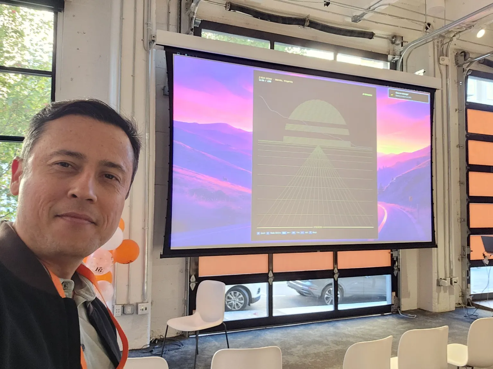
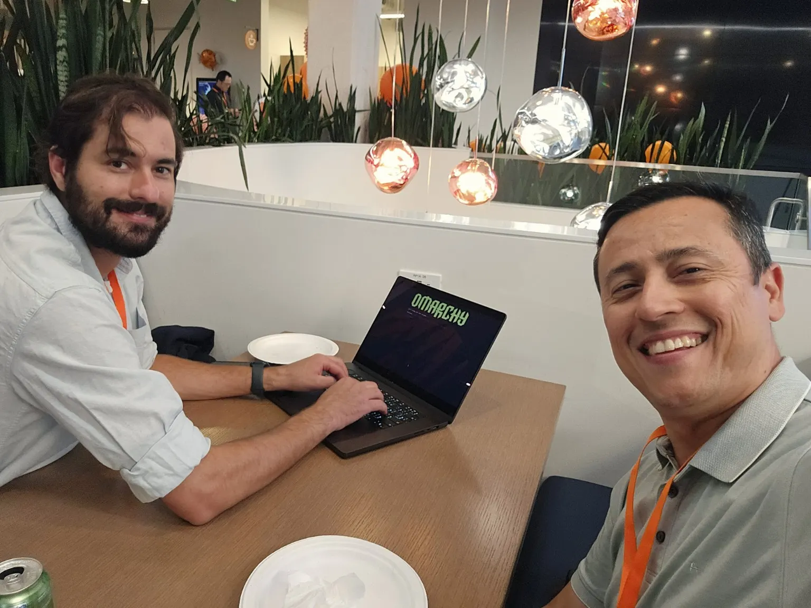

08 Rails World 2026 · Austin, TX
Quanto tempo até ninguém mais revisar código pessoalmente?
Pergunta de Obie Fernandez, em conversa com DHH
“Very soon.”
Muito em breve. — relato de conversa presencial

A revisão é uma barreira importante — não a única garantia.
PR =
proposta de mudança
+ discussão
+ validação
Como um aditivo de contrato: alguém propõe, as partes discutem, e só então assinam.
Ilustração conceitual — sem dados numéricos.
Gerar código ficou barato. Verificar se está correto continua sendo o problema difícil.
Paráfrase · The Pragmatic Engineer, nov/2026
Agentes já abrem muitos PRs. Mas quem aprova sem revisar joga uma slop grenade no colega.
Paráfrase · The Knowledge Project, set/2026
Se declarou aposentado da programação profissional: escrever código à mão virou exceção.
Paráfrase · Keynote Rails World 2026
Quanto tempo até ninguém mais revisar código pessoalmente?
Pergunta de Obie Fernandez, em conversa com DHH
“Very soon.”
Muito em breve. — relato de conversa presencial
Barras ilustrativas — o desafio comum é contexto: domínio, regras de negócio, convenções locais.
Experimento próprio, não benchmark. Volume não comprova qualidade.
Quem verifica o verificador?
Ambiente Linux de DHH, montado sobre Arch e Hyprland — e evoluindo rápido com ajuda de agentes.


Hoje eu falei de um gargalo.
Obrigado! · Renato Nitta · @renatonitta
x.com/renatonitta · linkedin.com/in/renatonitta · github.com/renatonitta